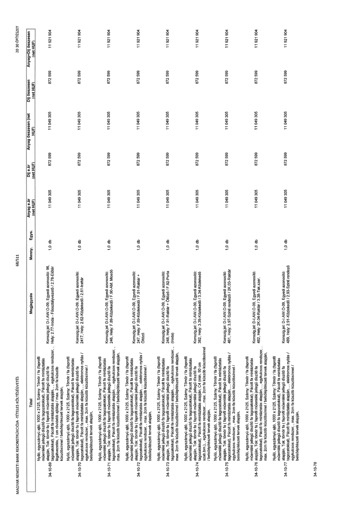

| Tétel | Megjegyzés | Menny. | Egys. | Anyag e.ár (net HUF) | Díj e.ár (net HUF) | Anyag összesen (net HUF) | Díj összesen (net HUF) | Anyag+Díj összesen (net HUF) |
|---|---|---|---|---|---|---|---|---|
| 34-10-69 alapján, Nyíló, egyszárnyú ajtó, 1000 x 2125, Szárny: Tömör / fa (faprofil műemléki jellegű díszítő fa tagozatokkal), Pácolt fa mintáztatás alapján, Tok: tömör fa (faprofil műemléki jellegű díszítő fa tagozatokkal), Pácolt fa mintáztatás alapján, , egykulcsos rendszer, , légátvezetés, 1 cm rövidebb ajtólap / max. 2cm fa küszöb küszöbsínnel / belsőépítészeti tervek alapján, | Konszig.jel: D-I.AW-O-09; Egyedi azonosító: 96, Hely: 2.77-Iroda - Főosztályvezető / 2.78-Előtér | 1,0 | db | 11 049 305 | 872 599 | 11 049 305 | 872 599 | 11 921 904 |
| 34-10-70 alapján, Nyíló, egyszárnyú ajtó, 1000 x 2125, Szárny: Tömör / fa (faprofil műemléki jellegű díszítő fa tagozatokkal), Pácolt fa mintáztatás alapján, Tok: tömör fa (faprofil műemléki jellegű díszítő fa tagozatokkal), Pácolt fa mintáztatás alapján, , egykulcsos rendszer, , légátvezetés, 1 cm rövidebb ajtólap / max. 2cm fa küszöb küszöbsínnel / belsőépítészeti tervek alapján, | Konszig.jel: D-I.AW-O-09; Egyedi azonosító: 2417, Hely: 2.62-Közlekedő / 2.61-Irattár | 1,0 | db | 11 049 305 | 872 599 | 11 049 305 | 872 599 | 11 921 904 |
| 34-10-71 alapján, Nyíló, egyszárnyú ajtó, 1000 x 2125, Szárny: Tömör / fa (faprofil műemléki jellegű díszítő fa tagozatokkal), Pácolt fa mintáztatás alapján, Tok: tömör fa (faprofil műemléki jellegű díszítő fa tagozatokkal), Pácolt fa mintáztatás alapján, , egykulcsos rendszer, , légátvezetés, 1 cm rövidebb ajtólap / max. 2cm fa küszöb küszöbsínnel / belsőépítészeti tervek alapján, | Konszig.jel: D-I.AW-O-09; Egyedi azonosító: 246, Hely: F.89-Közlekedő / F.90-AM. Mosdó | 1,0 | db | 11 049 305 | 872 599 | 11 049 305 | 872 599 | 11 921 904 |
| 34-10-72 alapján, Nyíló, egyszárnyú ajtó, 1000 x 2125, Szárny: Tömör / fa (faprofil műemléki jellegű díszítő fa tagozatokkal), Pácolt fa mintáztatás alapján, Tok: tömör fa (faprofil műemléki jellegű díszítő fa tagozatokkal), Pácolt fa mintáztatás alapján, , egykulcsos rendszer, , légátvezetés, 1 cm rövidebb ajtólap / max. 2cm fa küszöb küszöbsínnel / belsőépítészeti tervek alapján, | Konszig.jel: D-I.AW-O-09; Egyedi azonosító: 247, Hely: F.89-Közlekedő / F.91-Raktár + Öltöző | 1,0 | db | 11 049 305 | 872 599 | 11 049 305 | 872 599 | 11 921 904 |
| 34-10-73 alapján, Nyíló, egyszárnyú ajtó, 1000 x 2125, Szárny: Tömör / fa (faprofil műemléki jellegű díszítő fa tagozatokkal), Pácolt fa mintáztatás alapján, Tok: tömör fa (faprofil műemléki jellegű díszítő fa tagozatokkal), Pácolt fa mintáztatás alapján, , egykulcsos rendszer, , légátvezetés, 1 cm rövidebb ajtólap / max. 2cm fa küszöb küszöbsínnel / belsőépítészeti tervek alapján, | Konszig.jel: D-I.AW-O-09; Egyedi azonosító: 248, Hely: F.91-Raktár + Öltöző / F.92-Porta (Iroda) | 1,0 | db | 11 049 305 | 872 599 | 11 049 305 | 872 599 | 11 921 904 |
| 34-10-74 alapján, Nyíló, egyszárnyú ajtó, 1000 x 2125, Szárny: Tömör / fa (faprofil műemléki jellegű díszítő fa tagozatokkal), Pácolt fa mintáztatás alapján, Tok: tömör fa (faprofil műemléki jellegű díszítő fa tagozatokkal), Pácolt fa mintáztatás alapján, , egykulcsos rendszer, , légátvezetés, C4 (min. 90 cm szab.bm.) , egykulcsos rendszer, , max. 2cm fa küszöb küszöbsínnel / belsőépítészeti tervek alapján, | Konszig.jel: D-I.AW-O-09; Egyedi azonosító: 382, Hely: 3.39-Közlekedő / 3.34-Közlekedő | 1,0 | db | 11 049 305 | 872 599 | 11 049 305 | 872 599 | 11 921 904 |
| 34-10-75 alapján, Nyíló, egyszárnyú ajtó, 1000 x 2125, Szárny: Tömör / fa (faprofil műemléki jellegű díszítő fa tagozatokkal), Pácolt fa mintáztatás alapján, Tok: tömör fa (faprofil műemléki jellegű díszítő fa tagozatokkal), Pácolt fa mintáztatás alapján, , elektromos nyitás / egykulcsos rendszer, , max. 2cm fa küszöb küszöbsínnel / belsőépítészeti tervek alapján, | Konszig.jel: D-I.AW-O-09; Egyedi azonosító: 481, Hely: 3.97-Szinti rendező / 2K.03-Raktár | 1,0 | db | 11 049 305 | 872 599 | 11 049 305 | 872 599 | 11 921 904 |
| 34-10-76 alapján, Nyíló, egyszárnyú ajtó, 1000 x 2125, Szárny: Tömör / fa (faprofil műemléki jellegű díszítő fa tagozatokkal), Pácolt fa mintáztatás alapján, Tok: tömör fa (faprofil műemléki jellegű díszítő fa tagozatokkal), Pácolt fa mintáztatás alapján, , elektromos nyitás / egykulcsos rendszer, , max. 2cm fa küszöb küszöbsínnel / belsőépítészeti tervek alapján, | Konszig.jel: D-I.AW-O-09; Egyedi azonosító: 482, Hely: 2K.04-Raktár / 3.38-Tak.szer. | 1,0 | db | 11 049 305 | 872 599 | 11 049 305 | 872 599 | 11 921 904 |
| 34-10-77 alapján, Nyíló, egyszárnyú ajtó, 1000 x 2125, Szárny: Tömör / fa (faprofil műemléki jellegű díszítő fa tagozatokkal), Pácolt fa mintáztatás alapján, Tok: tömör fa (faprofil műemléki jellegű díszítő fa tagozatokkal), Pácolt fa mintáztatás alapján, , elektromos nyitás / egykulcsos rendszer, , max. 2cm fa küszöb küszöbsínnel / belsőépítészeti tervek alapján, | Konszig.jel: D-I.AW-O-09; Egyedi azonosító: 489, Hely: 2.91-Közlekedő / 2.93-Szinti rendező | 1,0 | db | 11 049 305 | 872 599 | 11 049 305 | 872 599 | 11 921 904 |
